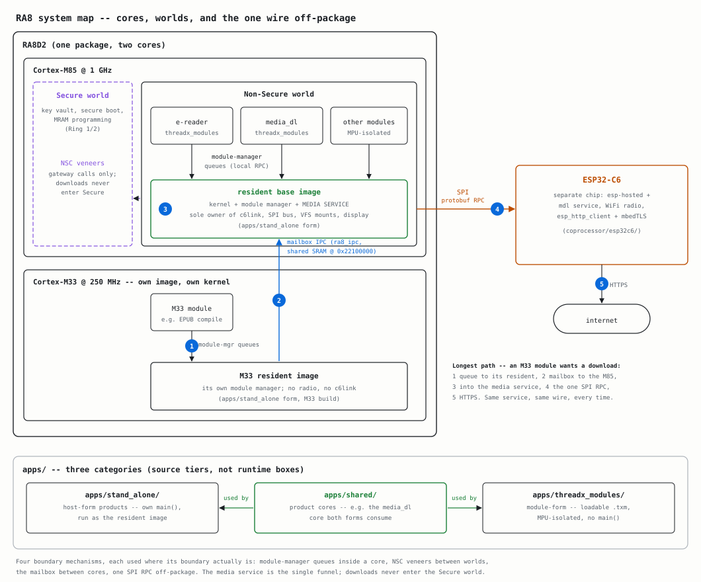

- Generated by
 1.16.1
1.16.1
|
ra8-firmware 0.1.0
Bare-metal firmware for the Renesas RA8 family (RA8D2 / RA8P1)
|
A bare-metal firmware platform for the Renesas RA8 family (RA8D2 and RA8P1): a hand-written HAL over the chip's register map, ports of the RTOS / USB / networking / TLS stacks, and a host emulator that boots the real firmware images so none of it needs a board. No Renesas FSP code lives here – the FSP sources and the Hardware User's Manual are reference material. Every first-party line under libs/ and port/, excluding the declared third_party/ SOUP roots, is written against the manual.

The three tiers are deliberate. libs/, port/, the emulator and the CI machinery are the platform – the reason the repo exists. examples/ are per-library demos that double as the hardware-in-the-loop vehicles. apps/ holds proving products, each structured as if it were its own repository and consuming libs/ the way an outside consumer would; libs/ never imports from apps/. Alongside them sit tests/ (host unit tests, never cross-compiled), tools/, scripts/, infra/ (the declared CI fleet), coprocessor/ (ESP32-C6 companion firmware) and docs/.
just is the grouped target reference. It is derived from the justfiles, so unlike a list written out here it cannot drift. On a fresh clone, install the repository-local Python environment, hooks, exact Ansible collections, and pinned CI image with just setup; it requires only Git, a standard-library Python in the range declared by pyproject.toml, just, trusted CA certificates, and a working Podman, Docker, or nerdctl runtime. Run just dev_shell afterward for a writable shell containing the pinned ARM compiler, host compilers, CMake, formatters, analyzers, and documentation tools; none are installed into the host's system Python or package directories.
tools/ra8_emulator boots the unmodified cross-compiled .elf – the same image that flashes to a board – on an emulated Cortex-M over a modelled RA8D2 peripheral space, and shows the GLCDC framebuffer beside the board LEDs and live USB / UART / IRQ / touch state. The live window is macOS-only (Cocoa, provisioned by just apps::emulator::setup); booting, MMIO reporting, console capture and frame dumps run headless everywhere.
Because it runs the real binary through the real bring-up code, it reproduces firmware bugs a short bench run never reaches. It models hardware handshakes rather than silicon timing, and some peripherals are modelled further than others, so it complements the bench instead of replacing it. CI leans on it: just apps::emulator::eil boots every HIL app headless and asserts its expectation, and just apps::emulator::matrix sweeps every example.
The bench board is an EK-RA8D2: Cortex-M85 at 1 GHz plus Cortex-M33 at 250 MHz, 1 MB MRAM, 1.6 MB ECC SRAM, 64 MB Octo-SPI flash and 64 MB SDRAM, a 7.0-inch 1024x600 parallel TFT, an OV5640 camera, and an on-board J-Link OB. Flashing and debugging need the SEGGER J-Link tools.
Rig settings (probe serial, bench Pi) live in a gitignored .env; copy .env.example and run just hil::find_jlink for the serial. The just hil namespace drives the maintainer's bench rig and will not work elsewhere without your own rig; run just hil to see every guarded operation.
Bricked board? just hil::dlm_recover_local asks for confirmation, mass-erases an EK-RA8D2 cabled to this machine, and returns it to the factory default (all-Secure, OEM_PL2). Run just hil::dlm_check_local first to confirm the probe reaches it without changing the target.
Every gate body lives once, in scripts/ci.sh, and each workflow step is a thin just quality::local::gate <name> driver, so local and CI cannot run different checks. just ci runs them all in the pinned devcontainer; just quality::native is the same set without a container runtime, which is the supported path on Linux.
docs/ is the reference shelf. Start at DEVELOPMENT.md for a quick guide to local tooling and CI gates, docs/ARCHITECTURE.md for how the firmware is put together, and docs/STYLE_GUIDE.md for the rules every file is held to; docs/RING_AND_WORLD.md explains the architectural rings and TrustZone worlds each file is tagged with. CONTRIBUTING.md is how to land a change, and docs/reference/ holds the datasheet and the Hardware User's Manual that every register access in this tree cites.
The issues are the public record. A private project board sorts them into lanes on top; if the board link does not open for you, nothing is hidden – the priority:, epic:, area: and needs-bench labels carry the same information.
MIT. See LICENSE.txt.